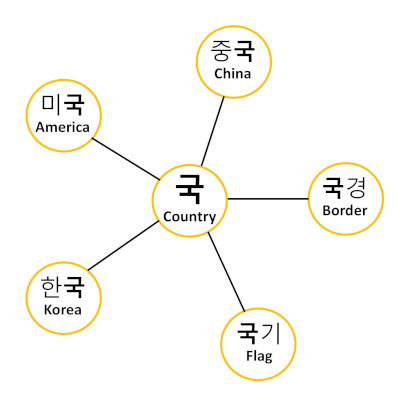

Chapter Insight
Numbers are an important part of any language. As you know numbers are used for things like telling time, expressing how many of something there is, asking how much something costs, and saying how old or how tall you are.
Like we talked about in the beginning chapters, Korean was heavily influenced by the Chinese language. Although Korean was it’s own functioning language before the adoption of Chinese characters for writing, it turns out that Chinese had a lot of useful words that hadn’t yet been contrived in the Korean language. Because of this the Koreans eventually came to adopt a huge number of Chinese vocabulary into the Korean language, along with the Chinese characters. In order to achieve this, they took the original Chinese words and Korean-ized them to match the sounds in the Korean language. Even today there are many words in Korean that sound similar to their Chinese counterpart but match Korean pronunciation conventions.
Just how much Chinese did Korea borrow? Many estimates indicate that more than half of Korean vocabulary is based in Chinese! The good news about this is that Chinese has one of the most logical systems of vocabulary creation in the world. Like in English, we often figure out what an unfamiliar word means by looking at it’s roots, you can easily do the same with many Chinese-based words. Granted you will be learning a whole new system of language roots, but I’ll be helping to point out root character meanings and you’ll figure it out in no time. Here’s an example chart with the Chinese root character 국 meaning country.
